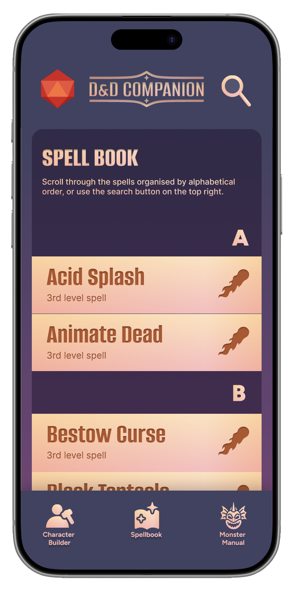
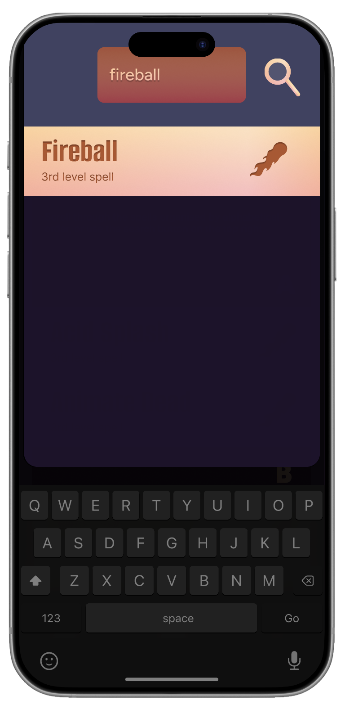

TRY THE CORE EXPERIENCEFind Fireball.
Find Fireball.
Make the next move.
Follow one short task: open search, find Fireball, then review its spell details. Use the controls to explore at your own pace.
A guided walkthrough using the original prototype screens.

